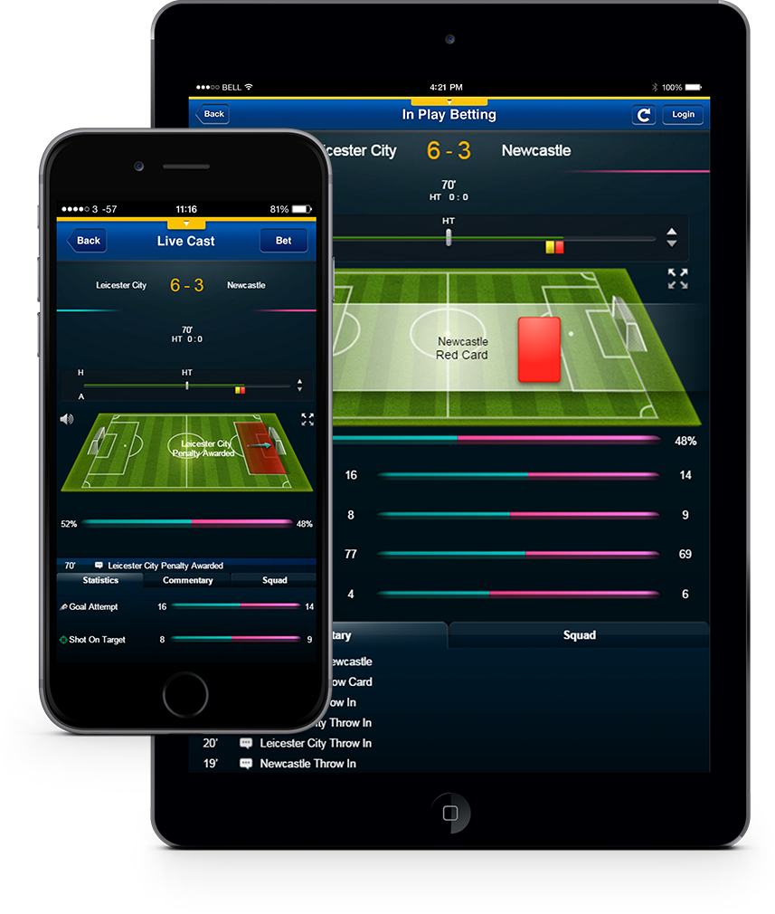

MOBILE APP
HKJC Football
Mobile Live Center
Mobile Live Center
Overview
The Hong Kong Jockey Club (HKJC), a world leader in providing horse racing, sporting and betting entertainment, and Hong Kong's premier charity and community benefactor, has expanded its betting service to mobile phones, supporting most of the popular handsets and tablets including iPhone, iPad and Android handsets to cater for the needs of different mobile device users. For football betting, Mtel has developed a mobile Live Center in the app to provide an in-play live updates based on goal and match status from live statistic to goal alert, animated live action to live commentaries.

Overview
The Hong Kong Jockey Club (HKJC), a world leader in providing horse racing, sporting and betting entertainment, and Hong Kong's premier charity and community benefactor, has expanded its betting service to mobile phones, supporting most of the popular handsets and tablets including iPhone, iPad and Android handsets to cater for the needs of different mobile device users. For football betting, Mtel has developed a mobile Live Center in the app to provide an in-play live updates based on goal and match status from live statistic to goal alert, animated live action to live commentaries.
Challenge
Almost all international soccer matches take place overseas, which means there is a time difference for football fans in Hong Kong. For HKJC customers, it is challenging to watch the live broadcasts of the matches when they are at work or on the street. Customers who have placed the bets do care about the results of the matches and there are also people who desire to place the bets during the games. Information of the games from the Internet mostly cannot closely follow the matches. Inaccurate commentaries also affect customers in making the right judgment on the bets.
Solution
The live cast enhances customer experience in two aspects: digitalizing the soccer games and providing live information.
A mini soccer field visualizing the match by showing movements and attacks of football players in animation. When it goals, users are informed by the goal alert. Users can get the essential information such as the superior team, time of the game, scores, number of goals and penalty cards at a glance.
An information box with the match record lets users understand the match condition anytime. The statistics column shows the number of goals, attempts, shots on target, dangerous attacks and the corner kick ratios. The commentary column with a timeline lists out all actions, such as free kicks and throw-ins, to imitate a live commentary by real person aside. Records are renewed by second, which enables users to monitor the game closely. The squad column shows the team players’ game history and the starting formations of the teams.
To deal with such a large amount of information flow, Amazon Web Services (AWS) is powering Football MLC scalability, availability and cost effectiveness. While Amazon Elastic Compute Cloud EC2 technology provides the app with a virtual server in the cloud, Simple Storage Service (S3) technology provides highly scalable object storage.
EC2 powers Football MLC to scale up or down its capacity within minutes, with which its various data centers enable thousands or more of users to run the app smoothly at the same time. On-demand instances allow our client to pay for the compute capacity they actually consume.
As Football MLC constantly updates the news of matches and keeps uploading the latest version of graphics and videos, Amazon S3 provides cost-effective storage to enable the smooth running of the app. It enables Football MLC to store, retrieve and restore every file history. S3 storage can scale up or down according to the actual usage.
As the live cast is inside the betting app, users are able to check out their bet slips anytime when running the live cast. They can also place new bets during the games. This platform brings the games to users closer than ever before.
A mini soccer field visualizing the match by showing movements and attacks of football players in animation. When it goals, users are informed by the goal alert. Users can get the essential information such as the superior team, time of the game, scores, number of goals and penalty cards at a glance.
An information box with the match record lets users understand the match condition anytime. The statistics column shows the number of goals, attempts, shots on target, dangerous attacks and the corner kick ratios. The commentary column with a timeline lists out all actions, such as free kicks and throw-ins, to imitate a live commentary by real person aside. Records are renewed by second, which enables users to monitor the game closely. The squad column shows the team players’ game history and the starting formations of the teams.
To deal with such a large amount of information flow, Amazon Web Services (AWS) is powering Football MLC scalability, availability and cost effectiveness. While Amazon Elastic Compute Cloud EC2 technology provides the app with a virtual server in the cloud, Simple Storage Service (S3) technology provides highly scalable object storage.
EC2 powers Football MLC to scale up or down its capacity within minutes, with which its various data centers enable thousands or more of users to run the app smoothly at the same time. On-demand instances allow our client to pay for the compute capacity they actually consume.
As Football MLC constantly updates the news of matches and keeps uploading the latest version of graphics and videos, Amazon S3 provides cost-effective storage to enable the smooth running of the app. It enables Football MLC to store, retrieve and restore every file history. S3 storage can scale up or down according to the actual usage.
As the live cast is inside the betting app, users are able to check out their bet slips anytime when running the live cast. They can also place new bets during the games. This platform brings the games to users closer than ever before.
Insight
Football MLC strives to improve the customer betting experience with a live cast centralizing all information that customers need. Real-time information and precise statistics helps users in mastering and analyzing the latest news of the game better.